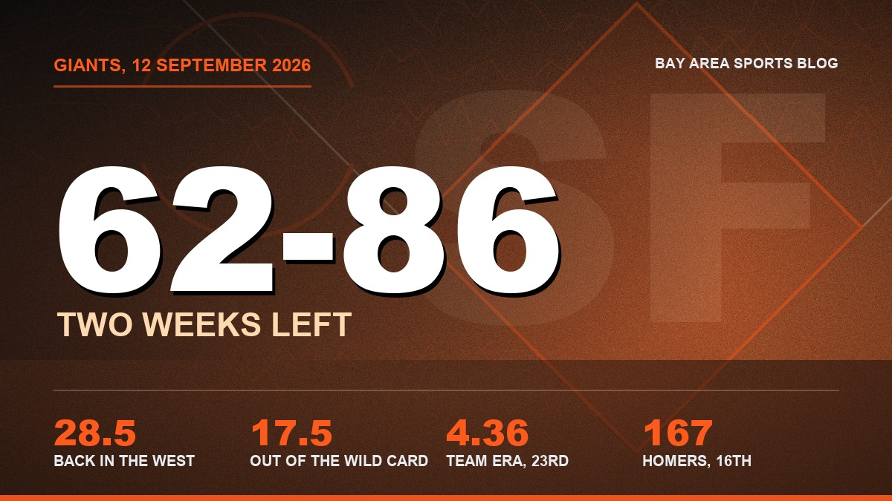
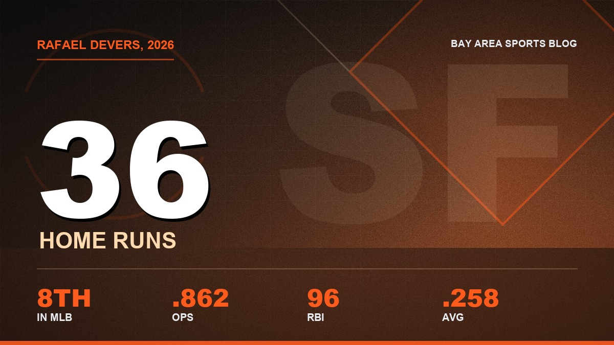

The Giants Are 62 and 86 With Two Weeks Left, and I Still Watched Every Pitch of the Cardinals Series
Rafael Devers has 36 homers and nobody outside this fan base has said a word about it, Bryce Eldridge looks like a hitter, and the rest of September is auditions. I'm fine with that.

My wife asked me Thursday night why I was still watching. Giants down two tothe Padres, bottom of the seventh, a team that got eliminated in everythingbut the arithmetic sometime in July. I didn't have a good answer for her. Imuted it and kept watching anyway.
62 and 86.

Twenty four under. 28 and a half back in the West, 17 and a half out of thelast wild card, which is the kind of number you stop checking around LaborDay. San Diego came into Oracle and beat us 7 to 5, because of course theydid, and there are two weeks of this left.

Rafael Devers has 36 home runs. He's eighth in all of baseball, he'sat .258 with 96 RBI and an .862 OPS for a club that's 24 games under, andI'll bet you the price of a ticket that if you asked ten people at work toname the biggest power seasons in the National League this year not one ofthem says his name. That's what happens when you do it in a terrible summerin a park that eats fly balls. Nobody's watching. We wrote the column about his 29th whenhe got to 29 and the silence has only gotten louder since.

Thirty six.
He'll finish around 38 or 39 in this ballpark. Go look up what that meanshistorically and then come back and tell me the trade was a disaster.
Then there was St. Louis, which was the fun part of the month. We won allthree, 5 to 4, then 2 to 1, then 7 to 6, and the last two were the kindwhere you're standing in the kitchen with the fridge door open because youcan't sit down. A team that's 24 under doesn't get many of those.
I took all three personally.

Bryce Eldridge is the thing I actually care about now. He's at .270 with 16homers, 53 RBI and an .822 OPS across 102 games, which for a kid in hisfirst real run isn't a tease. That's a hitter. The swing stopped lookinglike a prospect swing sometime in August. He takes his walks, he doesn'tpanic with two strikes, and we made the long case in the long Eldridge piece back inJuly. Everything since has held up, which almost never happens with the guythis fan base picks to love in the middle of a bad year.
Jung Hoo Lee is hitting .279 and he plays center field like it's easy. Ninehomers and 55 RBI isn't what anybody dreamed about when he signed, and Idon't care, because a .279 hitter who catches everything is a usefulbaseball player and this roster has about four of those.
Willy Adames is back on the injured list after a .230 year with 21 homers.Casey Schmitt is done, 60 day, and he's the one that stings. He was at .271with 21 of his own and he forced his way into this lineup out of nothing,and then it just stopped.

The pitching is the pitching. A 4.36 team ERA, 23rd in baseball. LandenRoupp got through a full season at 4.00 with 139 strikeouts in 150 and twothirds, which is a real major league starter, and he's 9 and 13 because thislineup handed him four runs a night. Logan Webb is 8 and 8 with a 4.10 and Iwill not hear a word against him.
Eight and eight. On this team.

Now the part that gets me in trouble in the group chat. I don't want them towin these last two weeks. Not really. I want Eldridge to get 60 more atbats, I want to see whether the arms that came back in the selloff canbreathe up here, and I want the draft slot that goes with finishing wherethis team has earned to finish. Ask me again if we're up one in the ninth onthe final Sunday. I'll be screaming for the win like a hypocrite.
The manager thing hasn't resolved and it won't before October. Posey alreadysaid Vitello is back in 2027, which we covered in the day Posey confirmed it, and my positionhasn't moved. A rookie manager handed a selling roster got an impossibleyear to be judged on. He also made the specific in game decisions I watchedwith my own eyes. Both of those stay true at once and I'm tired of beingasked to pick one.

What I want out of the winter isn't a name. Two starters out of theorganisation. That's the whole list. This franchise has spent a decaderenting arms on one year deals to arrive at 79 wins, and I'd rather finish70 and know who the third starter is in 2028. Where the rebuild actually stands is where we keep therunning state of it, and it gets updated when it moves.
Two weeks. Then the stretch where I pretend the 49ers schedule is enough andopen the MLB app out of habit anyway, every night, until about the firstweek of November. You already know you're going to do it too.
The roster is on the depth chart page, the whole year in order is in the season hub,and the rest lives on the Giants hub.
More coverage: Bay Area Sports section · Bay Area Sports · Bay Area Sports Blog home